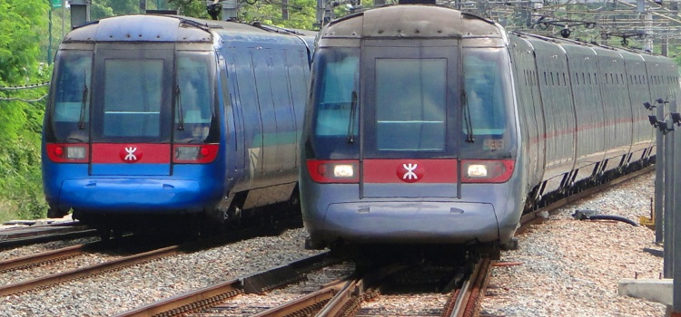
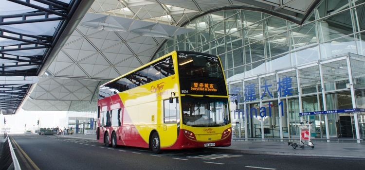

离境须知
上页提到的所有来港方式（中国航班、渡轮、港铁、城际直通火车及跨境巴士）在离境时都可选乘。香港人多车多，交通容易堵塞，我们建议您提早出发前往离境集合地。
到达香港国际机场
您可乘搭多种交通工具由市区到机场，包括机场快线、公共巴士、计程车和酒店巴士（如有）。

机场快线由港铁运营，接驳机场及市区港铁路线。列车从香港站开出，途径九龙站、青衣站，全程只需约24分钟，约10分钟一班车。车费大约由65到115港币不等。每天大约从早上6时运作至凌晨12时48分。如您乘搭机场快线，更可在登机前一天至航班起飞前90分钟，于香港站及九龙站享用免费市区预办登机服务。
最实惠的方式则乘搭公共巴士，香港大部分地区都设置机场巴士站，全程约一小时，车费大约从10到52港币不等。前往机场的公共巴士分为4种，分别是A线、E线、NA线和N线。
| 巴士种类 | 说明 |
| A线巴士 | 直达特定区域的机场巴士，车费较贵 |
| E线巴士 | 站点较多的普通巴士，但车费比A线巴士便宜 |
| NA线巴士 | 通宵特快巴士服务，只停该区域的站，车费较贵 |
| N线巴士 | 通宵巴士服务，站点较多，但车费比NA线巴士便宜 |

您亦可乘搭快捷灵活的计程车，从任何区域直达机场。车费由100到350港币不等。
详情请看官网：
香港铁路有限公司：http://www.mtr.com.hk/
城巴：http://www.nwstbus.com.hk/
龙运巴士：http://www.lwb.hk/tc/
到达码头
中国客运码头
若须前往中国客运码头，可依以下方式到达尖沙咀中港城后进入。
| 到达方式 | 线路/站点 |
| 港铁 | 尖沙咀站A1出口/柯士甸站F出口 |
| 巴士 | 2C、3C、12、14、110、215P、215X、238P、238S、238X、259B、260X、261B、268B、269B、281A、296D、973、973P、E21X、K2、NR904 |
| 专线小巴 | 3、6、6A、7、77M、78 |
港澳码头
若须前往港澳码头，可依以下方式到达上环信德中心后进入。
| 到达方式 | 线路/站点 |
| 港铁 | 上环站D出口 |
| 巴士 | 3A、4、4X、7、37B、37X、71、71P、90B、91、 94、94X、373A、905、961P |
| 专线小巴 | 54、55 |
到达深圳罗湖口岸、福田口岸及其他口岸
搭乘港铁东铁线便可到罗湖/落马洲终点站，直达罗湖口岸及福田口岸。可是搭乘东铁线前要注意该列车的终点站，每班车只会去罗湖或落马洲其中一站。所以在出发前先要了解您要到达的关口，以免搭乘时出现混乱迷路的情况。
此外，旅客也可以乘搭巴士经深圳湾等关口过关，更多详情可参考运输署资料。
网址：http://www.td.gov.hk/